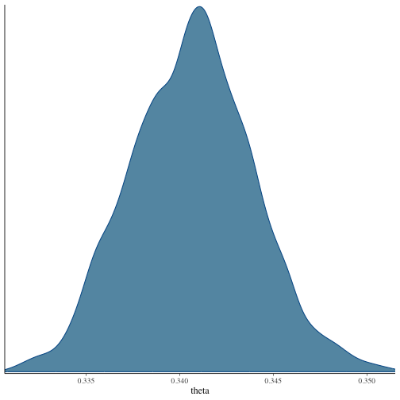

knitr::opts_chunk$set(fig.path = "tiedModels-")
library(speedyBBT)
library(coda)Bradley-Terry with ties
Many comparative judgement studies feature tied comparisons. This could be a sporting league where matches can end in a tie, or a social study where judges say that two items have approximately equal qualities. We follow Caron and Doucet (2012) and introduce a threshold parameter \(\theta \geq 0\). The probability that item \(i\) beats item \(j\) is specified through
\[\text{logit}(\pi_{ij}) = \lambda_i - \lambda_j + \theta.\]
Small values of \(\theta\) mean that there is a high threshold in the relative difference resulting in a tie. This yields the probabilities of a win and a tie as
\[\begin{align} \pi_{ij} &= \frac{e^{\lambda_i}}{e^{\lambda_i} + e^{\lambda_j} + e^{\theta}} \\ \pi_{i=j} &= \frac{(e^{2\theta} - 1)e^{\lambda_i + \lambda_j}}{(e^{\lambda_i} + e^{\lambda_j} + e^{\theta})(e^{\lambda_i + \theta} + e^{\lambda_j})}. \end{align}\]
As in the other routines in the package, multivariate normal prior distribution is placed on the item quality parameters \(\lambda\) and an inverse-gamma prior distribution on the variance hyperparameter of the multivariate normal distribution. The tie threshold parameter \(\theta\), has an exponential distribution placed on it:
\[\begin{align} \lambda &\sim \text{MVN}(\mu, \alpha^2\Sigma) \\ \alpha^2 &\sim \text{inv-}\Gamma(\chi, \psi) \\ \theta &\sim \text{Exp}(\tau). \end{align}\]
In the MCMC algorithm, all parameters except for \(\theta\) are updated by drawing from their
full conditional distribution. The threshold parameter \(\theta\) is updated using a
Metropolis-Hastings random walk, where new values of \(\theta\) are proposed from a normal
distribution with mean the current value of \(\theta\) and standard deviation \(\nu\) (the rw.sd argument). A
full description of the underlying statistical framework can be found in
Seymour and Hernandez (2024).
Deprivation in Dar es Salaam
The darEsSalaam dataset contains pairwise comparisons of
the deprivation of subwards in Dar es Salaam, Tanzania. Judges could say
that one subward was more deprived than the other, or that the two were
tied. The data also include an adjacency matrix describing which
subwards are neighbours.
## outcome subward1 subward2 sex
## 1 1 230 155 male
## 2 1 380 112 male
## 3 1 395 136 male
## 4 1 89 235 male
## 5 1 49 217 male
## 6 1 117 449 maleWe use the adjacency matrix to construct the prior covariance matrix
for the item qualities, assuming that neighbouring subwards have more
similar levels of deprivation (you can see another example of this in
the Getting started with speedyBBT vignette).
prior.var <- expm::expm(darEsSalaam$adjacencyMatrix)
prior.var <- diag(diag(prior.var)^-0.5) %*%
prior.var %*%
diag(diag(prior.var)^-0.5)We fit the model with BBTm.ties(). The
rw.sd argument controls the standard deviation of the
random walk proposal for the tie threshold parameter \(\theta\).
set.seed(432)
darTiedModel <- BBTm.ties(
n.objects = nrow(darEsSalaam$adjacencyMatrix),
outcome = darEsSalaam$comparisons$outcome,
item1 = darEsSalaam$comparisons$subward1,
item2 = darEsSalaam$comparisons$subward2,
item.prior.var = prior.var,
hyperparameter = TRUE,
rw.sd = 0.005,
n.iter = 5000,
burn.in = 100,
verbose = FALSE
)The posterior histogram for the threshold parameter \(\theta\) are:
if (requireNamespace("bayesplot", quietly = TRUE)) {
# Install bayesplot if not already installed
# install.packages("bayesplot")
# install.packages("ggplot2")
library(bayesplot)
library(ggplot2)
# Trace plots
bayesplot::mcmc_intervals(darTiedModel, pars = c("theta")) +
ggtitle("Posterior distributions with 95% credible intervals") +
ylab(expression(theta)) +
xlab("Density")
# Density plots
bayesplot::mcmc_dens(darTiedModel, pars = c("theta"))
} else {
# Trace plots
plot(
darTiedModel[, paste0("theta")], main = "Trace plots for the tie threshold")
}## This is bayesplot version 1.16.0## - Online documentation and vignettes at mc-stan.org/bayesplot## - bayesplot theme set to bayesplot::theme_default()## * Does _not_ affect other ggplot2 plots## * See ?bayesplot_theme_set for details on theme setting
The posterior mean and 95% credible interval for \(\theta\) are:
## [1] 0.3406564## 2.5% 97.5%
## 0.3344861 0.3472650You can see that if the qualities of two subwards differ by less that 0.34 units, the judge is likely to declare a tie.
References
Caron F, Doucet A (2012). “Efficient Bayesian Inference for Generalized Bradley-Terry Models.” Journal of Computational and Graphical Statistics, 21(1), 174-196. doi:10.1080/10618600.2012.638220.
Seymour RG, Hernandez F (2024). “Scalable Bayesian Inference for Bradley-Terry Models with Ties: An Application to Honour Based Abuse.” arXiv:2405.13399, https://arxiv.org/abs/2405.13399.